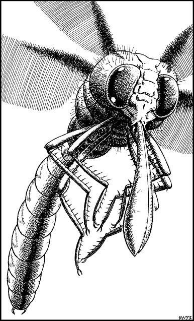

116
You regard the distant vent with trepidation. It looks to be so high and so far away that you fear an escape from this world may truly be impossible. In your growing despair, you call upon your divine mentor—the God Kai—for inspiration and, as if in answer to your prayer, you experience a sudden moment of revelation in which a bold plan takes form in your mind’s eye.
Using your innate Magnakai Discipline of Animal Control, you focus on one of the smaller dragonflies that is circling above the fecund blossoms lining the lip of the gorge. Instantly it responds to your silent command and comes soaring down to land in a nearby clearing. Like a tame and obedient horse, this winged creature waits patiently for you to clamber upon its back. Then, once you are in position, it takes to the air with such speed that your stomach feels as if it has been physically torn from your body. Several minutes pass before you fully recover from the shock of the stunningly swift take-off, and are able to sit back and enjoy the spectacular aerial views of the gorge.
Using your palms and your knees, you quickly discover that you are able to steer the dragonfly towards the distant vent. Unfortunately, your ascent does not go entirely unnoticed. You are close to a mile above the canyon when suddenly your insectile steed attracts the unwanted attention of a larger predatory dragonfly. This predator is bigger and faster than your encumbered mount and, as it circles around him, it is clear that it is simply biding its time, awaiting the best moment to strike.
You draw your weapon and tighten your grip on your mount’s scaly back as the predatory dragonfly swoops down to make its initial attack.

Golasyx: COMBAT SKILL 49 ENDURANCE 45
This creature is attempting to stab you with the tip of its spear-like proboscis as it swoops past; therefore you need only fight this combat for one round.
If you inflict an equal or greater ENDURANCE loss upon the enemy in this single round of combat, turn to 38.
If you sustain a greater ENDURANCE loss than your enemy, turn to 192.